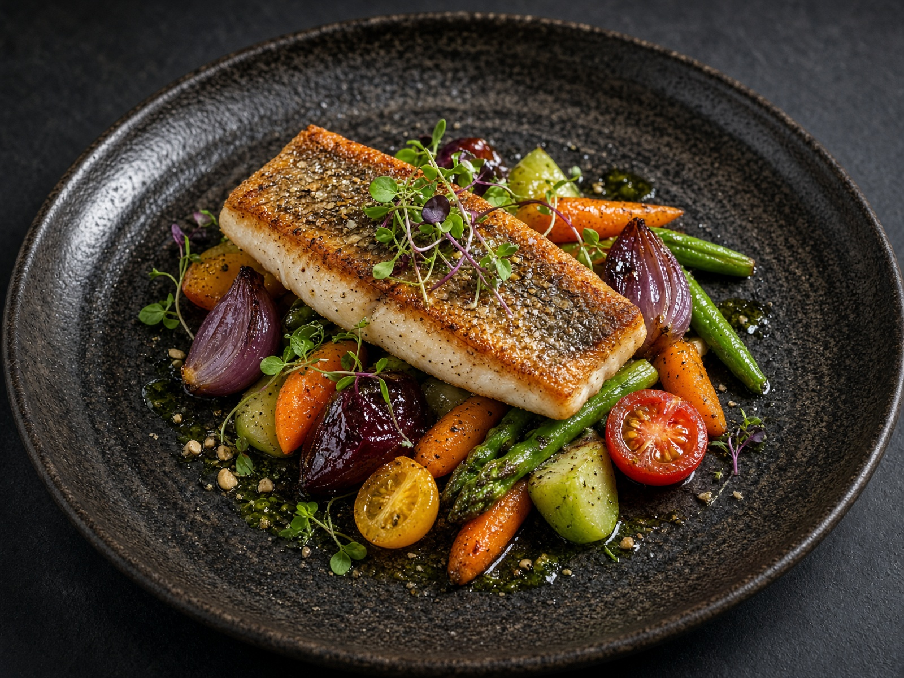

The kitchen
Fire, acid, and whatever arrived at dawn
Verde Table is a forty-seat dining room in downtown Napa. The menu turns twice a week. We work with eight farms within thirty miles, a coastal fisher, and a baker who still mills. Come hungry, leave a little slower.

40
Seats
8
Farms
2×
Menu each week
2014
Opened
This week's menu
Hours
- Tuesday – Thursday5:30 – 9:30pm
- Friday – Saturday5:00 – 10:00pm
- Sunday5:00 – 9:00pm
- MondayClosed